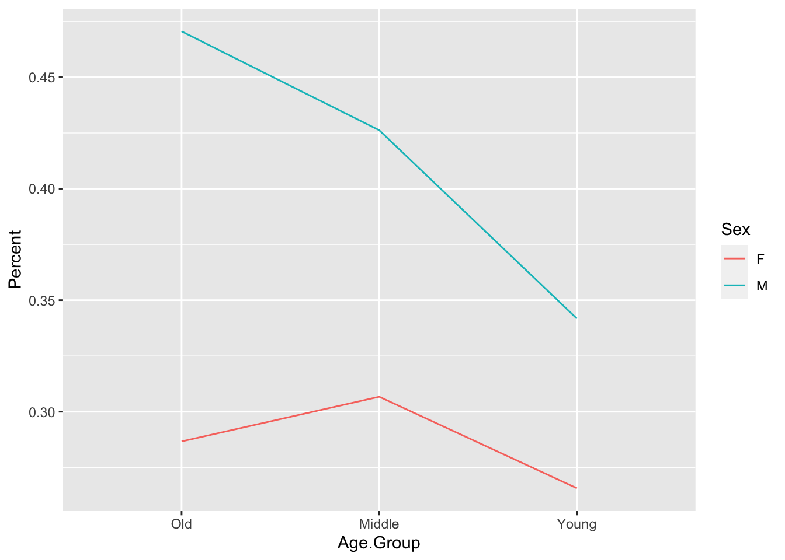

Proportions for ggplot2
ggplot2.
![]()
There are two main ways to make graphs in . The first is using the standard graphing capabilities of . The second is using a much more sophisticated and customizable graphics package called ggplot2. Describing the ins and outs of the ggplot2 package is beyond the scope of these instructions, but what these instructions can do is teach you how to organize your summary statistics in such a way that they are usable by ggplot2.
Why is there a separate section on preparing summary statistics for ggplot2? It is ggplot2 expects summary statistics to be organized in a way that is non-intuitive to us as sociolinguists. When we represent summary statistics we usually represent them like cross-tabs, for example:
| Female | Male | Total | ||||
|---|---|---|---|---|---|---|
| Age Group | n | % Deletion | n | % Deletion | n | % Deletion |
| Young | 271 | 27 | 357 | 34 | 628 | 31 |
| Middle | 238 | 31 | 122 | 43 | 360 | 35 |
| Old | 150 | 29 | 51 | 47 | 201 | 33 |
| Total | 659 | 29 | 530 | 37 | 1,189 | 1,189 |
In the above table there are variables both as rows (here Age.Group) and columns (here Sex). If I was going to create a chart in Excel of summary statistics this is how I would naturally make it. This is how data is presented in manuscripts, it is also how it is presented in Goldvarb, and it is how it is presented to us by the prop.table() function. It is NOT how ggplot2 wants your data to be organized. For ggplot2 each variable has to exist in its own individual column — much closer to the organization of the ftable() or what is produced using tidy methods.
In order to create this kind of organization (if not using tidy methods) you need to “melt” the prop.table() using the function melt() in the package reshape2. You’ll do this in two steps. First you create a new object td.prop, which is the proportion table of the levels of Dep.Var for each level of Age.Group and Sex, just like the table above. Then you “melt” that table using the function melt(), and assign this new table to a new object td.prop.melt.
# Create object td.prop as proportion table of each level of Dep.Var for each
# level of Age.Group and Sex
td.prop <- prop.table(table(td$Age.Group, td$Sex, td$Dep.Var), margin = c(1, 2))
# Melt td.prop
library(reshape2)
td.prop.melt <- melt(td.prop)
# View first six lines of td.prop.melt
head(td.prop.melt) Var1 Var2 Var3 value
1 Old F Deletion 0.2866667
2 Middle F Deletion 0.3067227
3 Young F Deletion 0.2656827
4 Old M Deletion 0.4705882
5 Middle M Deletion 0.4262295
6 Young M Deletion 0.3417367This new melted table does not contain informative column names, so you add those as the third step.
# Create column names for td.prop.melt
colnames(td.prop.melt) <- c("Age.Group", "Sex", "Dep.Var", "Percent")
# View first six lines of td.prop.melt
head(td.prop.melt) Age.Group Sex Dep.Var Percent
1 Old F Deletion 0.2866667
2 Middle F Deletion 0.3067227
3 Young F Deletion 0.2656827
4 Old M Deletion 0.4705882
5 Middle M Deletion 0.4262295
6 Young M Deletion 0.3417367An alternative way to melt the columns is to save the proportion table as a new tab-delimited-text file. You might want to do this anyway, as having a separate file containing summary statistics may be useful to you. One use I have for tab-delimited-text file versions of my summary statistics is that they are much easier for copying and pasting. If you copy and paste from the R console window there is an inconsistent number of space characters between columns (e.g., above there are five space characters between 1 and Young, four between 2 and Middle, and five between 3 andOld). If you save that same table to a text file you can specify that you want each cell separated by a tab character instead.
# Create object td.prop as proportion table of each level of Dep.Var for each
# level of Age.Group and Sex
td.prop <- prop.table(table(td$Age.Group, td$Sex, td$Dep.Var), margin = c(1, 2))
# Melt td.prop
library(reshape2)
td.prop.melt <- melt(td.prop)
# Create column names for td.prop.melt
colnames(td.prop.melt) <- c("Age.Group", "Sex", "Dep.Var", "Percent")
# Write td.prop.melt to file
write.table(td.prop.melt, file = "Data/summaryAgeGroupSexMelted.txt", quote = FALSE,
sep = "\t", row.names = FALSE)
# Write td.prop to file (with automatic melting)
write.table(td.prop, file = "Data/summaryAgeGroupSex.txt", quote = FALSE, sep = "\t",
row.names = FALSE)The two write.table() functions above produce the exact same tab-delimited-text file. The one difference between them is that the melted table (e.g., summaryAgeGroupSexMelted.txt) includes column names.


When the write.table() melts the proportion table for you it does not create the new column names. For this reason, I like to melt proportion tables before I save them so that I have the opportunity to name the table’s columns. In the write.table() functions above you first specify the object you want to write to a text file, then you specify what you want to call that file and where you want it to be created. Here I’ve named the files summaryAgeGroupSexMelted.txt and summaryAgeGroupSex.txt and saved it in a subfolder called Data in the same folder in which my R script is saved. You can save your file anywhere on your computer and call it whatever you want. You can specify any file path here. For example, I could have written ~/Documents/My Project/Data to indicate a folder called Data in a folder called My Project in my Documents folder on root drive of my Mac computer. If you are running a PC your folder structure will likely start with . In the function you specify that quote = FALSE. If you specify TRUE, R will put quotation marks around the values in each cell. I have never needed this. You further specify that the separator between cells in the same row is a tab, sep="\t", which creates a tab-delimited-text file (.txt). If you wanted to create a comma-separated-value table (.csv) you would instead specify sep="," and change the file extension from ".txt" to ".csv". Finally, you specify that row.names = FALSE because there are no row names in this table, just column names.
If you’ve saved a summary statistics file previously and want to read it into R for use with ggplot2, you can use the same procedure as you used for reading in your data file.
# Read in Summary Statistics File
td.AgeSex <- read.delim("Data/summaryAgeGroupSexMelted.txt")Here’s an example of a basic ggplot2 line graph that can be made with the above summary statistics. The first three steps are only necessary if you didn’t read in the summary statistics file above.
# Create object td.prop as proportion table of each level of Dep.Var for each
# level of Age.Group and Sex
td.prop <- prop.table(table(td$Age.Group, td$Sex, td$Dep.Var), margin = c(1, 2))
# Melt td.prop
library(reshape2)
td.AgeSex <- melt(td.prop)
# Create column names for td.prop.melt
colnames(td.AgeSex) <- c("Age.Group", "Sex", "Dep.Var", "Percent")
# Reorder Age.Group
td.AgeSex$Age.Group <- factor(td.AgeSex$Age.Group, levels = c("Old", "Middle", "Young"))
# Create basic ggplot2 line graph of the proportion of deletion by Age.Group,
# with lines separated by Sex
library(ggplot2)
qplot(data = td.AgeSex[td.AgeSex$Dep.Var == "Deletion", ], x = Age.Group, y = Percent,
geom = "line", group = Sex, colour = Sex)
For this graph you can use the quick plot function qplot() available in the ggplot2 package. For qplot() you specify the data, here the object td.AgeSex where td.AgeSex’s column Dep.Var equals Deletion. This filtering is only specified because you don’t need to represent both Deletion and Realization on the same graph (as the value of one implies the value of the other). You then specify that you want your x axis to be Age.Group x = Age.Group. The axis will be ordered left to right (Young, Middle,Old) because you reordered the Age.Group column levels before running qplot(). You specify thatPercent is the y axis y = Percent, and that the kind of graph you want is a line graph geom = "line". Specifyinggroup = Sex means the data will be grouped according to the levels of Sex, and produces two lines in the graph: one for men and one for women. To make the two lines different colours, specify colour = Sex.2
ggplot2 is infinitely customizable. You can change almost every element of the graph — for example, you could change the y axis to show 0 to 100 percent instead of 0 to 50 percent — but these types of specifications are for another set of instructions.3
The use of the tidy method for cross tabs should be immediately apparent. There is no need to take the extra step to melt your proportions before building your plot. We will use the same code that we used to generate proportions from the previous chapter. First, it is useful to reorder the Age.Group variable, as this ordering will be inherited by the summarize() function. Next we use the tidy code to generate proportions and assign the results to an object called results and then build our plot from that object. We also make a tweak so that the y-axis ranges from 0 to 1, as this is the full range of possible proportions with ylim=c(0,1).4 This also moderates what might look like exteme differences in the figure generated above with a smaller y axis. We also give the x axis and the y axis new labels with ylab="Proportion of Deleted Tokens" and xlab= "Age Group" and give the table a title with main = "Proportion of Deleted (t ,d) tokens in Cape Breton English by Age and Sex".
# Reorder Age.Group
td.AgeSex$Age.Group <- factor(td.AgeSex$Age.Group, levels = c("Old", "Middle", "Young"))
# Generate a tidy object of proportions of Dep.Var by Age.Group and Sex, with
# only Deletion included
results <- td %>%
group_by(Age.Group, Sex, Dep.Var, .drop = FALSE) %>%
summarize(Count = n()) %>%
mutate(Prop = Count/sum(Count)) %>%
subset(Dep.Var == "Deletion")
# Create basic ggplot2 line graph of the proportion of deletion by Age.Group,
# with lines separated by Sex
library(ggplot2)
qplot(data = results, x = Age.Group, y = Prop, geom = "line", group = Sex, colour = Sex,
ylim = c(0, 1), ylab = "Proportion of Deleted Tokens", xlab = "Age Group", main = "Proportion of Deleted (t ,d) tokens in Cape Breton English by Age and Sex")Footnotes
If you don’t have the
tddataset loaded in R, go back to Doing it all again, buttidyand run the code.↩︎Or
color = Sex. Both will work.↩︎There are lots of
ggplot2instructions online. Searching ``change y axis, qplot, ggplot2” will likely find you the right information.↩︎The concatenating function
c()is used to combine values. Here it combines the desired start and end of the y axis.↩︎
Reuse
Citation
@online{huntgardner2022,
author = {Matt Hunt Gardner},
title = {Proportions for `Ggplot2`},
series = {Linguistics Methods Hub},
volume = {Doing LVC with R},
date = {2022-09-27},
url = {https://lingmethodshub.github.io/070_lvcr.html},
doi = {10.5281/zenodo.7160718},
langid = {en}
}